var_name1 <- 10
var2 = 20
var.name3 <- 30
var_name_4 = 40R Basics
This lab consists of learning fundamental concepts in R
Variables
A variable provides us with named objects that our programs can manipulate. A valid variable name consists of letters, numbers and the dot or underline characters. It is important to note variable names are case sensitive. That is, var1 and Var1 are different variables. Below are appropriate variable names in R
| Valid Variable Name | Reason |
|---|---|
| variable_name | Contains letters and underscore |
| long.variable_name | Contains letters, dot, and underscore |
| var | Contains letters |
| var1 | Contains letters and numbers |
| long.variable_name2 | Contains letters, numbers, dot and underscore |
| var1_name.1 | Contains letters, numbers, dot and underscore |
| .var_name | Can start with period, contains letters and underscore |
This is a good starting point for valid variable names. Next we demonstrate a few examples where variable names are invalid.
| Invalid Variable Names | Reason |
|---|---|
| 2var | Starts with a number |
| _varname | Starts with underscore |
| .2var_name | While starting with a (.) dot is valid, it can not be followed by a number |
Now that we have an idea of how to name variables, lets discuss variable assignments. Variables can be assigned values using leftward (<-), rightward (->) and equal (=) operators. However, we will only stick with the leftward and equal assignment operators.
Vectors
The easiest method to create any type of vector in R is using c() (as in concatenate). We primarily focus on two types of vectors; numeric and character
Numeric vectors
num_vec <- c(0,1,2,3,4)
typeof(num_vec)#> [1] "double"class(num_vec)#> [1] "numeric"Using c() is not the only way to generate a vector, we can also generate the above vector using seq() as follows
seq(from=0,to=4)#> [1] 0 1 2 3 4Another approach to generate the same sequence can be done using 0:4
0:4#> [1] 0 1 2 3 4or more generally a:b, where a is the starting number and b is the last number in the sequence
We can apply arithmetic operations to our numerical vector num_vec, such as addition, subtraction, multiplication, division, and exponentiation. These operations will be applied to each element in the vector (element-wise).
| Operator | Description |
|---|---|
| + | Addition |
| - | Subtraction |
| * | Multiplication |
| / | Division |
| ^ | Exponent |
| %% | Modulus (Remainder from division) |
| %/% | Integer Division |
Arithmetic operations applied to numeric vectors follow PEMDAS order of operations, demonstrated in the following example
Subtract 1 from each element
(num_vec-1)#> [1] -1 0 1 2 3Subtract 1 from each element, then square them
(num_vec-1)^2#> [1] 1 0 1 4 9Subtract 1 from each element, square them, then double each element
2*(num_vec - 1)^2#> [1] 2 0 2 8 18Subtract 1 from each element, square them, double them, then add 1 to each element
2*(num_vec - 1)^2 + 1#> [1] 3 1 3 9 19pemdas_vec <- 2*(num_vec - 1)^2 + 1
pemdas_vec#> [1] 3 1 3 9 19Generating an odd sequence from 1 to 9, we can use c() or seq()
c(1,3,5,7,9)#> [1] 1 3 5 7 9seq(from =1,to=10,by=2)#> [1] 1 3 5 7 9Note if you know the ordering of the arguments of a function it is not necessary to specify them. For example, it is optional to write from and to arguments in the seq() function
seq(from = 1,to = 10)#> [1] 1 2 3 4 5 6 7 8 9 10seq(1,10)#> [1] 1 2 3 4 5 6 7 8 9 10Character vectors
chr_vec <- c('A','B',"C")
typeof(chr_vec)#> [1] "character"class(chr_vec)#> [1] "character"Manipulating vectors
There are multiple ways to access or replace values in vectors. The most common approach is through “indexing”. It is important to know in starts with index 1.
big_vec <- 1:100
big_vec[1]#> [1] 1big_vec[10] # extract the 10th element in your vector#> [1] 10For accessing elements in a vector we can think vector[indices you want to extract] the way we extract certain elements can be through some condition, that is vector[condtion]
big_vec[ c(1,5,10) ]#> [1] 1 5 10big_vec[ 1:10 ] # what are the first 10 elements ?#> [1] 1 2 3 4 5 6 7 8 9 10Using c() we can concatenate elements from one vector into another vector. For example, we can add the elements from pemdas_vec into the existing vector num_vec
c(num_vec,pemdas_vec)#> [1] 0 1 2 3 4 3 1 3 9 19Alternatively, we can add the elements from num_vec into the existing vector pemdas_vec
c(pemdas_vec,num_vec)#> [1] 3 1 3 9 19 0 1 2 3 4You will notice the order in which we concatenate the elements from the vectors does matter
chr_vec#> [1] "A" "B" "C"chr_vec[1] <- 'a'
chr_vec#> [1] "a" "B" "C"num_vec#> [1] 0 1 2 3 4num_vec[3] <- 10
num_vec#> [1] 0 1 10 3 4num_vec[ c(1,3) ] <- c(100,200)
num_vec#> [1] 100 1 200 3 4num_vec[c(1,2,3)] <- 0
num_vec#> [1] 0 0 0 3 4Installing packages
While base R contains a wide collection of useful functions and datasets, it might be necessary to install additional R packages to increase the power of R by improving existing base R functionalities, or by adding new ones.
In general, you can use this template to install a package in R:
install.packages('package_name')For example, in this lab we will need functions/datasets from the following package: maps. To install we simply type in our console
install.packages('maps')After running the above command you should get something similar to the output below. The messages appeared will depend on what operating system you are using, the dependencies, and if the package was successfully installed.
trying URL 'https://cran.rstudio.com/bin/macosx/contrib/4.2/maps_3.4.0.tgz'
Content type 'application/x-gzip' length 3105764 bytes (3.0 MB)
==================================================
downloaded 3.0 MB
The downloaded binary packages are in
/var/folders/mc/rznpg9ks30sd6wdh7rchs4v40000gn/T//RtmpLUHvkq/downloaded_packagesOnce the package was installed successfully we now have access to all of its functionalities/datasets. To access them we load the package into memory using the command library()
library(maps)However, if we only need to access say a specific function/dataset a few times we can do so using the notation packagename::functionname(). For example, if we only need to access the Canada cities data set in the maps package we run the following command
maps::canada.cities#> name country.etc pop lat long capital
#> 1 Abbotsford BC BC 157795 49.06 -122.30 0
#> 2 Acton ON ON 8308 43.63 -80.03 0
#> 3 Acton Vale QC QC 5153 45.63 -72.57 0
#> 4 Airdrie AB AB 25863 51.30 -114.02 0
#> 5 Aklavik NT NT 643 68.22 -135.00 0Alternatively, if you loaded the entire package using library(maps) we can access the Canada cities data set using the following command
canada.cities#> name country.etc pop lat long capital
#> 1 Abbotsford BC BC 157795 49.06 -122.30 0
#> 2 Acton ON ON 8308 43.63 -80.03 0
#> 3 Acton Vale QC QC 5153 45.63 -72.57 0
#> 4 Airdrie AB AB 25863 51.30 -114.02 0
#> 5 Aklavik NT NT 643 68.22 -135.00 0Importing Data
Comma-Seperated Values (CSV)
Warning
This tutorial assumes the data set is in working condition. That is we assume the default settings for read.csv. In some cases we may need to change the header, specify the field separator and more. See ?read.csv for further details and examples.
We will now import a csv file, to do this we will use the read.csv function. A simple template to follow is
read.csv(file = 'path where csv is located in your computer')An easy way to find the location of your data (or any file) is using the file.choose() function in R. file.choose() will bring up a file explorer window that allows you to interactively choose a file path to work with.
In your console, run the following command
file.choose()For example, after running the above command the births dataset is located in
#> [1] "/Users/toledo60/Desktop/Projects/personal-website/ucla/stats10/data/births.csv"
Warning
Depending on your location and operating system the directory will be different
Therefore, to read the births data set I would copy/paste the directory of the csv location and run the following command
birth_dat <- read.csv(file = "/Users/toledo60/Desktop/Projects/personal-website/ucla/stats10/data/births.csv")#> Gender Premie weight Apgar1 Fage Mage Feduc Meduc TotPreg Visits Marital
#> 1 Male No 124 8 31 25 13 14 1 13 Married
#> 2 Female No 177 8 36 26 9 12 2 11 Unmarried
#> 3 Male No 107 3 30 16 12 8 2 10 Unmarried
#> 4 Female No 144 6 33 37 12 14 2 12 Unmarried
#> 5 Male No 117 9 36 33 10 16 2 19 Married
#> 6 Female No 98 4 31 29 14 16 3 20 Married
#> Racemom Racedad Hispmom Hispdad Gained Habit MomPriorCond BirthDef
#> 1 White White NotHisp NotHisp 40 NonSmoker None None
#> 2 White White Mexican Mexican 20 NonSmoker None None
#> 3 White Unknown Mexican Unknown 70 NonSmoker At Least One None
#> 4 White White NotHisp NotHisp 50 NonSmoker None None
#> 5 White Black NotHisp NotHisp 40 NonSmoker At Least One None
#> 6 White White NotHisp NotHisp 21 NonSmoker None None
#> DelivComp BirthComp
#> 1 At Least One None
#> 2 At Least One None
#> 3 At Least One None
#> 4 At Least One None
#> 5 None None
#> 6 None NoneWe are not just limited to csv files, we can import data from Excel (in csv, XLSX, or txt format), SAS, Stata, SPSS, or others. A good reference to import various data formats can be found on datacamp r-data-import tutorial
Text File (TXT)
Next, we consider importing a .txt file. To do so we will use the read.table function instead of the read.csv function. For this example, we consider the ozone.txt file from our course website
A simple template to follow is
read.table(file = 'path where txt file is located in your computer')After running file.choose() on our console and locating the path in which we stored our data
file.choose()#> [1] "/Users/toledo60/Desktop/Projects/personal-website/ucla/stats10/data/ozone.txt"we can copy/paste the path as follows
ozone_dat <- read.table(file = "/Users/toledo60/Desktop/Projects/personal-website/ucla/stats10/data/ozone.txt",
header =TRUE)ozone_dat#> x y o3
#> 1 -120.0258 34.4622 0.044
#> 2 -119.7413 36.7055 0.081
#> 3 -121.7333 36.4819 0.035
#> 4 -119.2908 36.3325 0.080
#> 5 -117.1289 32.8364 0.053You will notice we now used an additional argument header = TRUE in our read.table function. We use header=TRUE, whenever the text tile contains names of the variables as its first line.
If we forget to use header=TRUE, the first line of the text file will be treated as a row of the dataset and read.table will automatically create the variable names for us
wrong_ozone_dat <- read.table(file = "/Users/toledo60/Desktop/Projects/personal-website/ucla/stats10/data/ozone.txt")wrong_ozone_dat#> V1 V2 V3
#> 1 x y o3
#> 2 -120.0258 34.4622 0.044
#> 3 -119.7413 36.7055 0.081
#> 4 -121.7333 36.4819 0.035
#> 5 -119.2908 36.3325 0.08In the above example, read.table automatically create the variable names V1,V2,V2 for each column and the first row has values x,y,o3 (which is incorrect).
In conclusion, some text files do not have variable names in the first row and only contain the actual data. As a result, it is our responsibility to import the data in a suitable manner.
Overview of Births Dataset
The births dataset is a sample of information about babies born in North Carolina. It is considered a data frame because it contains numeric information about each baby, as well as various pieces of categorical data such as the race of the parents, and whether the parents had a smoking habit.
birth_dat <- read.csv(file="/Users/toledo60/Desktop/Projects/personal-website/ucla/stats10/data/births.csv")birth_dat#> Gender Premie weight Apgar1 Fage Mage Feduc Meduc TotPreg Visits Marital
#> 1 Male No 124 8 31 25 13 14 1 13 Married
#> 2 Female No 177 8 36 26 9 12 2 11 Unmarried
#> 3 Male No 107 3 30 16 12 8 2 10 Unmarried
#> 4 Female No 144 6 33 37 12 14 2 12 Unmarried
#> 5 Male No 117 9 36 33 10 16 2 19 Married
#> Racemom Racedad Hispmom Hispdad Gained Habit MomPriorCond BirthDef
#> 1 White White NotHisp NotHisp 40 NonSmoker None None
#> 2 White White Mexican Mexican 20 NonSmoker None None
#> 3 White Unknown Mexican Unknown 70 NonSmoker At Least One None
#> 4 White White NotHisp NotHisp 50 NonSmoker None None
#> 5 White Black NotHisp NotHisp 40 NonSmoker At Least One None
#> DelivComp BirthComp
#> 1 At Least One None
#> 2 At Least One None
#> 3 At Least One None
#> 4 At Least One None
#> 5 None NoneWe can view the structure of our dataset using str() function
str(birth_dat) #> 'data.frame': 1992 obs. of 21 variables:
#> $ Gender : chr "Male" "Female" "Male" "Female" ...
#> $ Premie : chr "No" "No" "No" "No" ...
#> $ weight : int 124 177 107 144 117 98 147 138 104 123 ...
#> $ Apgar1 : int 8 8 3 6 9 4 8 9 9 9 ...
#> $ Fage : int 31 36 30 33 36 31 33 22 30 23 ...
#> $ Mage : int 25 26 16 37 33 29 30 20 21 18 ...
#> $ Feduc : int 13 9 12 12 10 14 12 14 12 12 ...
#> $ Meduc : int 14 12 8 14 16 16 9 14 12 12 ...
#> $ TotPreg : int 1 2 2 2 2 3 4 1 1 1 ...
#> $ Visits : int 13 11 10 12 19 20 16 10 30 16 ...
#> $ Marital : chr "Married" "Unmarried" "Unmarried" "Unmarried" ...
#> $ Racemom : chr "White" "White" "White" "White" ...
#> $ Racedad : chr "White" "White" "Unknown" "White" ...
#> $ Hispmom : chr "NotHisp" "Mexican" "Mexican" "NotHisp" ...
#> $ Hispdad : chr "NotHisp" "Mexican" "Unknown" "NotHisp" ...
#> $ Gained : int 40 20 70 50 40 21 22 20 11 19 ...
#> $ Habit : chr "NonSmoker" "NonSmoker" "NonSmoker" "NonSmoker" ...
#> $ MomPriorCond: chr "None" "None" "At Least One" "None" ...
#> $ BirthDef : chr "None" "None" "None" "None" ...
#> $ DelivComp : chr "At Least One" "At Least One" "At Least One" "At Least One" ...
#> $ BirthComp : chr "None" "None" "None" "None" ...There are 1992 rows and 21 columns, and we can see the datatypes for each variable (column). Those with int are considered numerical variables and those with chr are considered categorical variables.
Note: While looking at the structure of the data using str() we primarily saw two types of variables: chr and int to denote character and integer data types, respectively. However we can also have factor and double.
factor will be considered as a categorical variable and double would be considered as a numerical variable.
We can use the $ operator to access values from a data frame column. For example, if we want to extract the values from the Gender column from our dataset, we run the following command
birth_dat$Gender#> [1] "Male" "Female" "Male" "Female" "Male" "Female" "Male" "Male"If we save these values into a variable we will be able to manipulate them without altering the dataset itself.
genders <- birth_dat$GenderSummarizing and visualizing data
We will use the births data set to summarize and visualize numerical and categorical variables using the base R approach
Single variable
Numerical variables
One way to extract all the numerical columns is using both Filter and is.numeric functions. Below are the first five rows of all the numerical columns in birth_dat
Filter(is.numeric,birth_dat)#> weight Apgar1 Fage Mage Feduc Meduc TotPreg Visits Gained
#> 1 124 8 31 25 13 14 1 13 40
#> 2 177 8 36 26 9 12 2 11 20
#> 3 107 3 30 16 12 8 2 10 70
#> 4 144 6 33 37 12 14 2 12 50
#> 5 117 9 36 33 10 16 2 19 40The names of the numerical columns can be obtained using colnames() function in combination with the above statement
colnames(Filter(is.numeric,birth_dat) )#> [1] "weight" "Apgar1" "Fage" "Mage" "Feduc" "Meduc" "TotPreg"
#> [8] "Visits" "Gained"We will only consider the weight variable from our dataset to demonstrate methods to summarize and visualize a numerical variable.
Functions for numerical summaries include, but not limited to,
| Function | Description |
|---|---|
mean() |
mean |
median() |
median |
mode() |
mode |
sd() |
standard deviation |
var() |
variance |
min() |
minimum |
max() |
maximum |
summary() |
Computes the following: Minimum ,1st Quartile, Median,Mean ,3rd Quartile,Maximum |
Next, we’ll save the values from weight column into a separate variable and compute several numerical summaries listed above
birth_weight <- birth_dat$weightmean(birth_weight)#> [1] 116.0512median(birth_weight)#> [1] 117min(birth_weight)#> [1] 14max(birth_weight)#> [1] 177summary(birth_weight)#> Min. 1st Qu. Median Mean 3rd Qu. Max.
#> 14.0 106.0 117.0 116.1 129.0 177.0While summary() give us a quick numerical summary of our distribution, it is important to also visualize the overall distribution using a plot such as a boxplot
boxplot(birth_weight)
or a histogram
hist(birth_weight)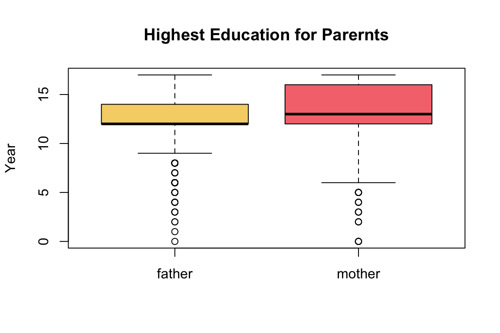
From the histogram above, while the overall distribution of the birth weights is symmetrical there are outliers causing the distribution to be skewed to the left.
For boxplot() and hist() we used the default settings, while they are informative we can alter their appearance to be more professional.
For example, we changed the x-axis label and y-axis label using xlab,ylab arguments,respectively. We changed the title with main and the color of the boxplot with col. The col argument can take values such as red,blue or any HEX code, see ?boxplot for further customization.
boxplot(birth_weight,
main='Boxplot of Birth Weights',
xlab ='birth weights', ylab='ounces',
col='#61b1ed')
Tip
For a collection of R colors by name refer to Rcolors. Another approach is to search ‘color picker’ in google and copy/paste the hex code
We can apply similar customization to our histogram
hist(birth_weight,
main='Histogram of Birth Weights',
xlab ='birth weights',
col='#d1584f',
breaks=20)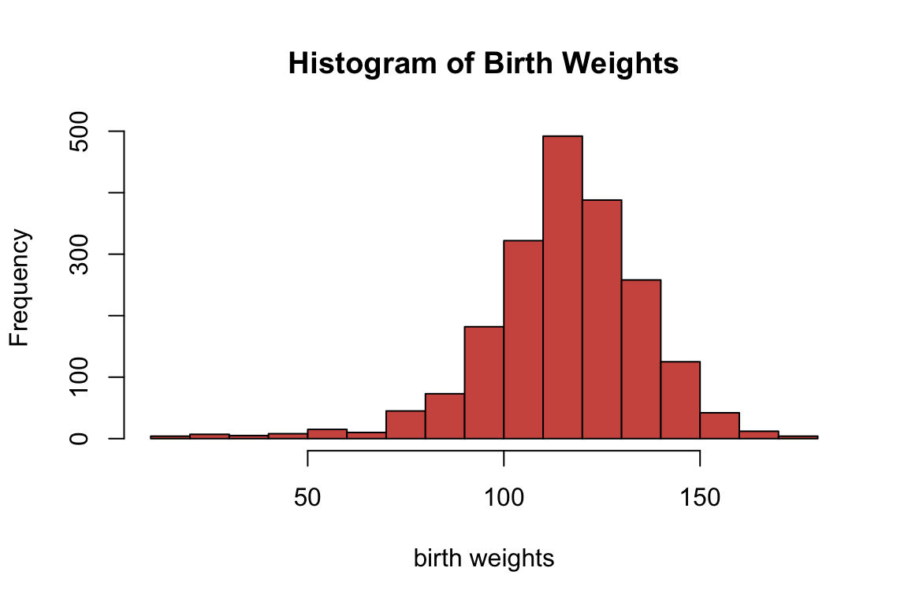
The hist function uses the Sturges method by default to determine the number of breaks on the histogram. We can manually change the number of breaks, but we should be careful not to specify a low or high number of breaks. Usually the default setting is appropriate for most scenarios.
Categorical variables
One way to extract all the character columns is using both Filter and is.character functions. A similar argument can be said for any columns that are factors, but instead we’d use is.factor.
Below are the first five rows of all the character columns in birth_dat
Filter(is.character,birth_dat)#> Gender Premie Marital Racemom Racedad Hispmom Hispdad Habit
#> 1 Male No Married White White NotHisp NotHisp NonSmoker
#> 2 Female No Unmarried White White Mexican Mexican NonSmoker
#> 3 Male No Unmarried White Unknown Mexican Unknown NonSmoker
#> 4 Female No Unmarried White White NotHisp NotHisp NonSmoker
#> 5 Male No Married White Black NotHisp NotHisp NonSmoker
#> MomPriorCond BirthDef DelivComp BirthComp
#> 1 None None At Least One None
#> 2 None None At Least One None
#> 3 At Least One None At Least One None
#> 4 None None At Least One None
#> 5 At Least One None None NoneThe names of the character columns can be obtained using colnames() function in combination with the above statement
colnames(Filter(is.character,birth_dat) )#> [1] "Gender" "Premie" "Marital" "Racemom" "Racedad"
#> [6] "Hispmom" "Hispdad" "Habit" "MomPriorCond" "BirthDef"
#> [11] "DelivComp" "BirthComp"We will only consider the Hispmom variable from our dataset to demonstrate methods to summarize and visualize a character variable.
First, we’ll save the values from Hispmom column into a separate variable and compute several categorical summaries
hispanic_mom <- birth_dat$HispmomThe table() function in R can be used to quickly create frequency tables.
table(hispanic_mom)#> hispanic_mom
#> Mexican NotHisp OtherHisp
#> 215 1693 84From the above frequency table we observe there were 25 mom who were Mexican, 1693 non Hispanic, and 84 were other types of Hispanic. We can easily convert the frequency table into a frequency table of proportions using prop.table(). The input for prop.table() is a table created using table().
prop.table(table(hispanic_mom))#> hispanic_mom
#> Mexican NotHisp OtherHisp
#> 0.10793173 0.84989960 0.04216867Now, we observe roughly 10.79% of moms were Mexican, 84.99% were non Hispanic and 4.22% were other types of Hispanic. Note that all of the proportions should add up to 1.
sum(prop.table(table(hispanic_mom)))#> [1] 1While the above method works, it is not the only way to obtain frequency tables. We can obtain the same results using tally() from the mosaic library.
mosaic::tally(hispanic_mom)#> X
#> Mexican NotHisp OtherHisp
#> 215 1693 84If we want frequency tables of proportions, we need to use the argument format and specify format = 'proportion'. There are other formats such as 'count', 'percent' etc.. for more details run ?mosaicCore::tally()
mosaic::tally(hispanic_mom,format='proportion')#> X
#> Mexican NotHisp OtherHisp
#> 0.10793173 0.84989960 0.04216867To plot a single categorical variable we can use barplot(). The input for barplot() when dealing with categorical data is a table, like the ones we created above
barplot(table(hispanic_mom))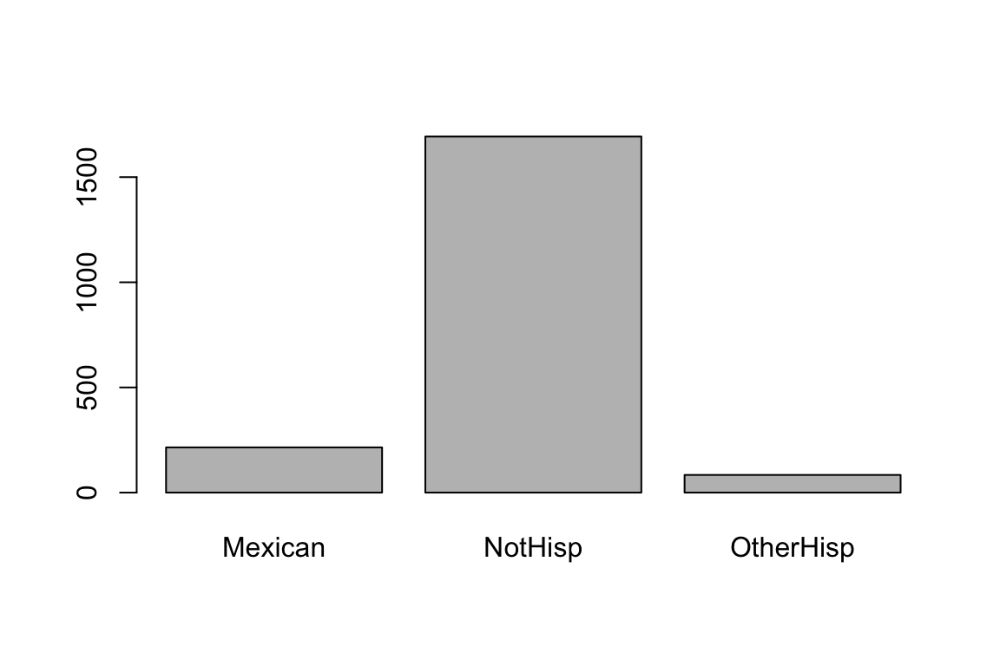
Instead of the frequency counts, we can plot frequency of proportions by inputting a frequency tables of proportions.
barplot(prop.table(table(hispanic_mom)),
main = 'Ethnicity Proportions of Moms',
col = '#d59cdb')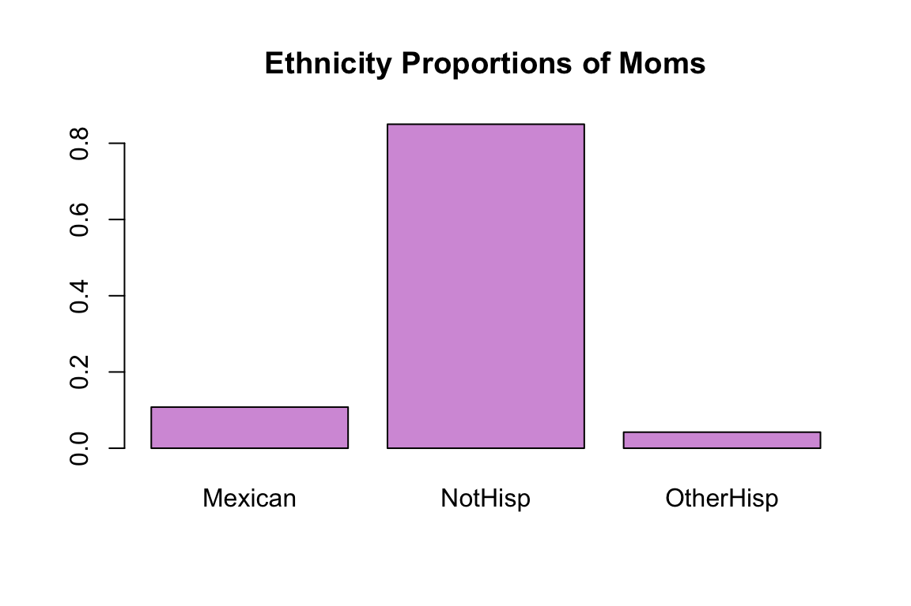
Two variables
Numerical variables
We consider the following two numerical variables: Feduc and Meduc, which is the highest education for fathers and mothers in this dataset, respectively.
father_eduction <- birth_dat$Feduc
mother_education <- birth_dat$MeducWe can compare their distributions in a single plot as we did in Section 2 with boxplots
boxplot(father_eduction,mother_education,
names = c('father','mother'),
col=c('#f5d376','#f5767c'),
main = 'Highest Education for Parernts',
ylab = 'Year')
For boxplots its pretty straight forward to compare two numerical distributions using the syntax boxplot(v1,v2,...). For histograms it requires a bit more work.
We start by creating a histogram for the first variable, then creating another histrogam for the second variable but using the argument add=TRUE. We must specify a unique color for each histogram representing the variables. In order for both of the histograms to fit properly on the same plot we must take into account the lowest and highest values among the multiple numerical variables.
low_x <- min(father_eduction,mother_education)
high_x <- max(father_eduction,mother_education)Lastly, we must specify a legend to appropriately distinguish the multiple histograms using the function legend().
hist(father_eduction, col='lightcoral',
xlim=c(low_x,high_x),
main='Education for Parents', xlab='Year')
hist(mother_education, col='lightblue', add=TRUE)
legend('topright', legend = c('father', 'mother'),
fill=c('lightcoral', 'lightblue'))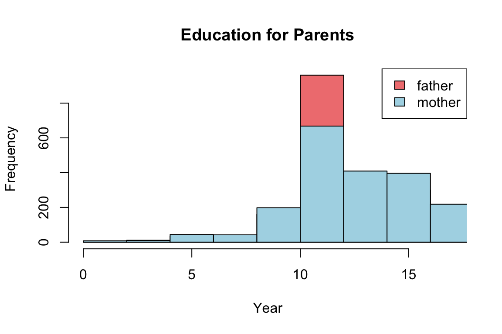
Warning
When using legend() it is important that you specify the correct ordering of colors for each group, otherwise the legend would be incorrect. For example, in our first histogram we chose “lightcoral” to represent “father” and “lightblue” to represent “mother” distributions. Which is why we used the arguments: legend=c('father','mother'), fill = c('lightcoral','lightblue') in that order
We can also consider a scatter plot to visualize the relationship between two numerical variables. We consider the two numerical variables Gained and weight. Gained describes the weight gained during the pregnancy term and weight describe the weight of the baby at birth.
plot(x = birth_dat$Gained,y = birth_dat$weight,
main = 'Baby weight vs pregnancy weight gain',
xlab = 'weight gained during pregnancy',
ylab = 'Baby weight (oz.)',
col='lightcoral')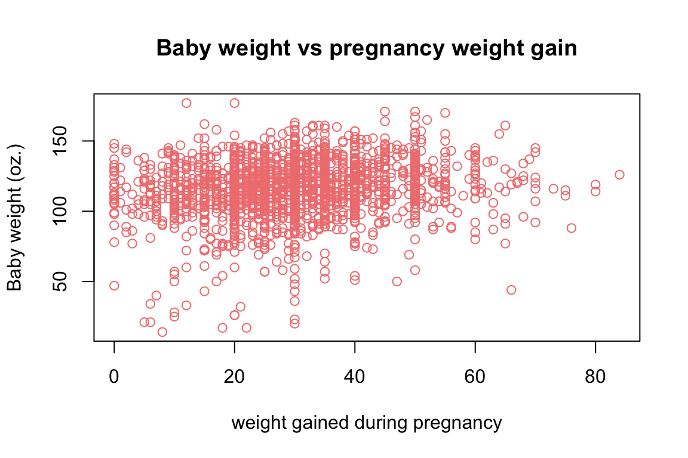
Categorical variables
For this example, we consider the following two character variables Hispdad and Habit. Hispdad determines whether the father of the baby was Hispanic or not. In particular, are they Mexican, non-Hispanic, or other type of Hispanic ethnicity. Habit determines whether or not the subject had a smoking habit or not.
When dealing with two categorical variables we can create a two-way table using table(v1,v2). Below is the table of frequency for both Habit and Hispdad.
Note: We save the table as a variable so we can use it later
smoker_hispanic_dad <- table(birth_dat$Habit,birth_dat$Hispdad)
smoker_hispanic_dad#>
#> Mexican NotHisp OtherHisp Unknown
#> NonSmoker 184 1236 78 307
#> Smoker 5 117 2 63From the above frequency table of counts you will notice that there were 184 Mexican dads who were non-smokers, 5 Mexican dads who were smokers, 1236 non-Hispanics who were non-smokers, 117 non-Hispanics who were smokers and similar interpretations can be made for the remaining cells.
We can obtain a table of proportions using prop.table()
prop.table(smoker_hispanic_dad)#>
#> Mexican NotHisp OtherHisp Unknown
#> NonSmoker 0.092369478 0.620481928 0.039156627 0.154116466
#> Smoker 0.002510040 0.058734940 0.001004016 0.031626506Now, lets plot the results of our table using the default barplot settings
barplot(smoker_hispanic_dad)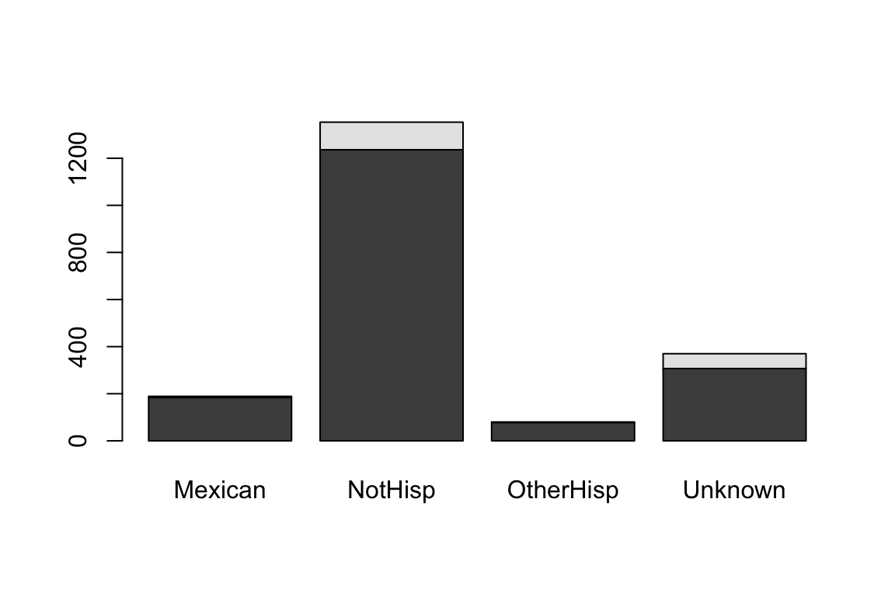
It is difficult to understand the meaning of the black and gray filled sections of the barplot. Although we may have a general understanding that the gray portion represents smokers and the black portion represents non-smokers based on the accompanying table, we should not assume that the reader will automatically make this connection.
We can add a legend by using the argument legend.text=TRUE, and barplot will use the row names of our table to make the legend. Moreover, we add appropriate labels to our plot
barplot(smoker_hispanic_dad,
legend.text = TRUE,
xlab = 'Ethnicity',
ylab = 'Counts')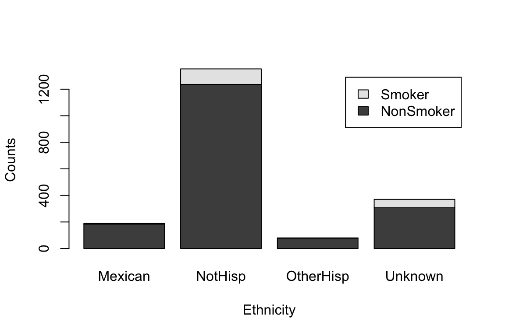
The above figure shows a stacked bar plot. If we wanted the bars next to each other, rather than on top of each other, we can use the argument beside=TRUE.
barplot(smoker_hispanic_dad,
legend.text = TRUE,
beside = TRUE,
xlab = 'Ethnicity',
ylab = 'Counts')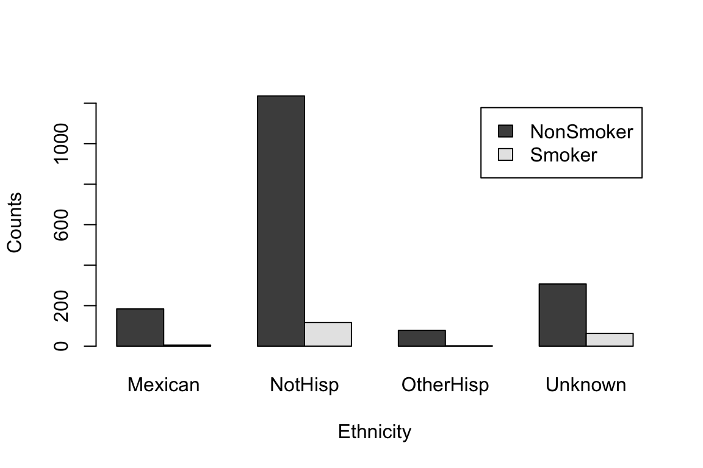
It is evident that the number of non-smokers exceeds that of smokers across all ethnicities. However, we may be able to obtain a more comprehensive understanding of the data by altering the grouping order of the bars. Specifically, we should examine which ethnic group has a higher count for each smoking category.
We can change the order of our table by taking the tranpose, that is we swap the columns and rows. In R, we can transpose any table-like object using the function t()
t(smoker_hispanic_dad)#>
#> NonSmoker Smoker
#> Mexican 184 5
#> NotHisp 1236 117
#> OtherHisp 78 2
#> Unknown 307 63From this point of view, we can observe the number of counts in each smoking habit category for each ethnicity. For example, there were 184 Mexican fathers who are non-smokers and 5 Mexican fathers that did smoke. Similar, interpretations can be made for other ethnic groups.
We can now use barplot on this new transposed table
barplot(t(smoker_hispanic_dad),
legend.text = TRUE,
beside = TRUE,
xlab = 'Smoking Habit',
ylab = 'Counts')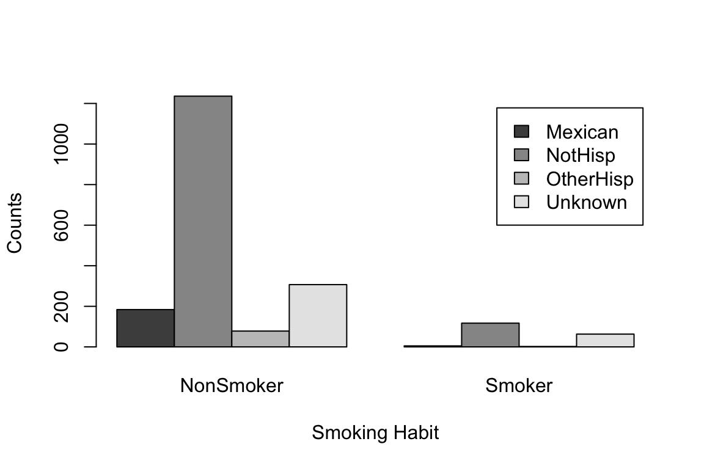
We can clearly see the non-Hispanic fathers make up the highest counts for non-smokers and smokers. While the default color palette is color-blind friendly it can be hard to distinguish the categories based on these colors.
With a quick google search of “four color palettes” you can find great palettes for 4 categories. For example, the following color palette was obtain from colorhunt.co
barplot(t(smoker_hispanic_dad),
legend.text = TRUE,
col =c('#4E6E81','#F9DBBB','#FF0303','#2E3840'),
beside = TRUE,
xlab = 'Smoking Habit',
ylab = 'Counts')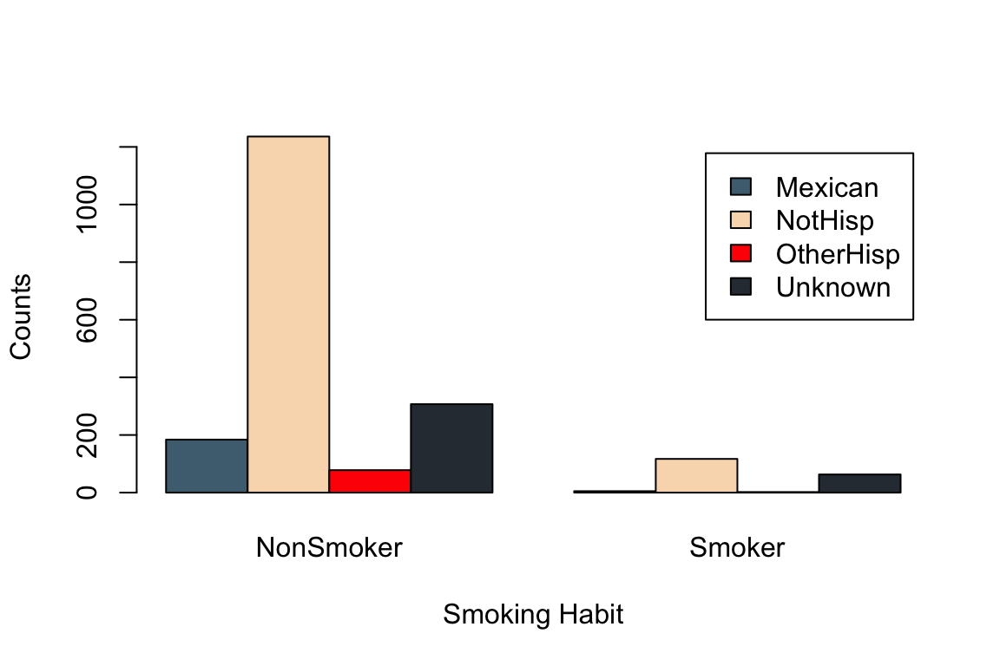